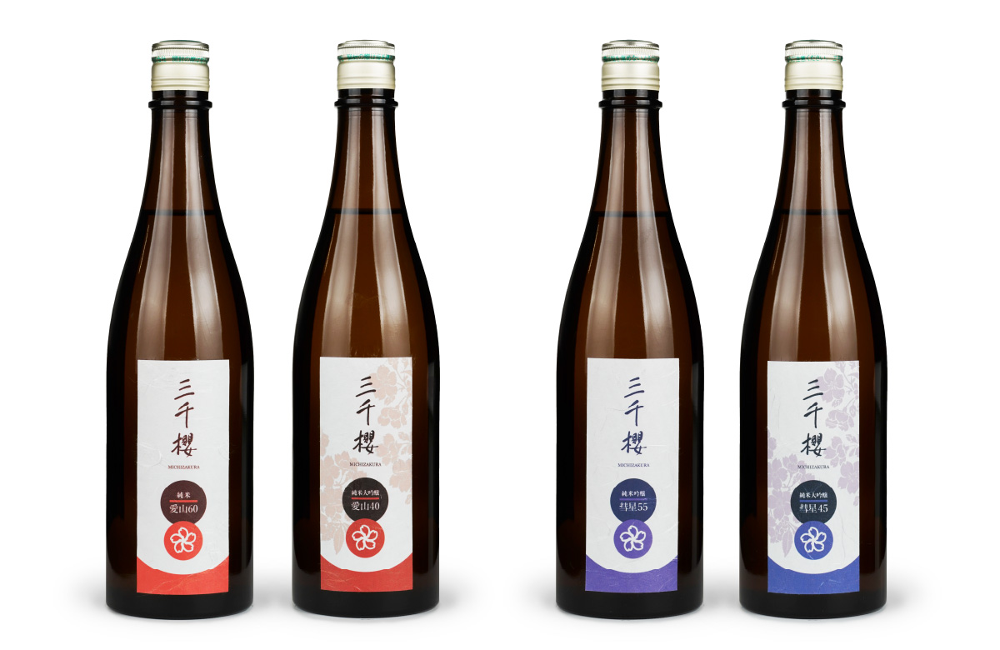
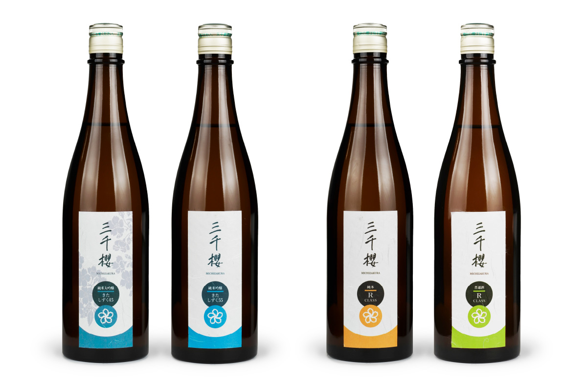
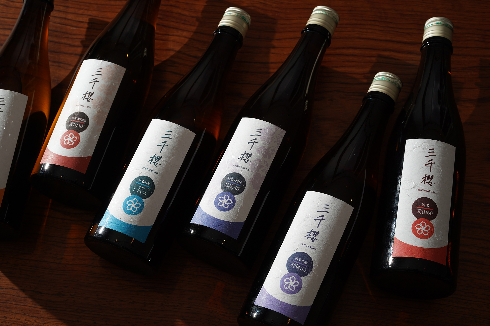
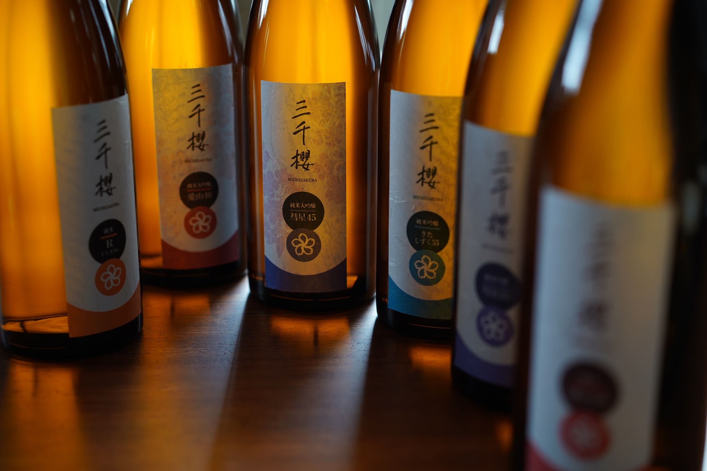

三千櫻酒造
三千櫻酒造株式会社
ラベルデザイン
2020. 11




ラベルデザイン
2020. 11
岐阜県東川町から北海道東川町へ「現役の日本酒蔵が長距離を移動する」という三千櫻酒造の稀有な挑戦へ花を添える、ラベルデザインのリニューアルをお任せいただきました。
ファンのみなさまへのヒアリングで出た意見として多かった「綺麗な味わい」「絶妙な甘味と酸味のバランス」「最高の食通酒」と言った三千櫻の味わいのイメージを元に制作した、凛と立つイメージの細長い形のラベルは、酒販店で目立つ珍しいフォルムながらも、シンプルな構成により暮らしの食膳の中に溶け込む雰囲気を意識しました。
＜ BACK
© Moeri Ito